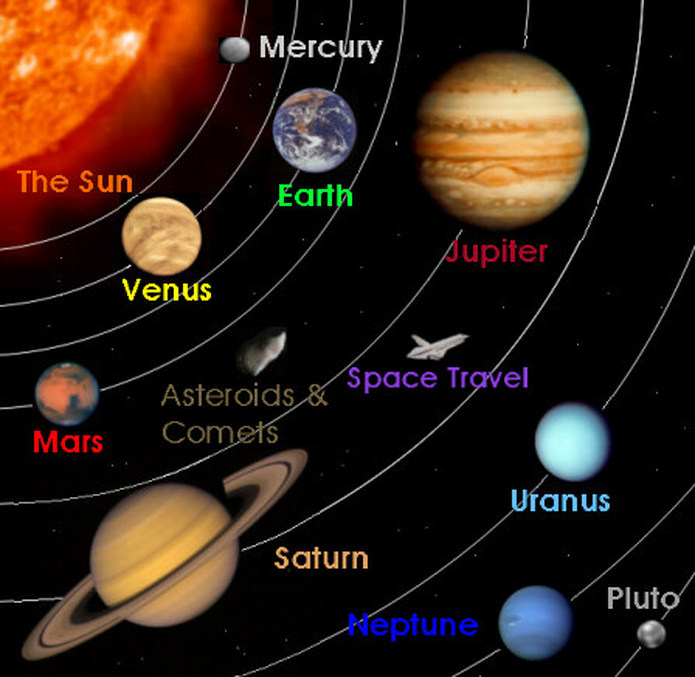

Венера — планета во Сончевиот систем. Таа е втората по близина планета до Сонцето коешто го обиколува за 224,7 земјини денови. По Месечината, таа е вториот најсјаен објект кој може да се види на ноќното небо. Максималната видливост планетата ја има пред изгрејсонце и малку по зајдисонцето. Затоа, често се именува како утринска ѕвезда или ѕвезда-вечерница.
Името на планетата „Венера“ доаѓа од името на Римската божица на љубовта – Венера. Исто така, многу од нејзините географски карактеристики ги носат имињата на мистични и славни жени од историјата.
Едно деноноќие трае 117 земјини денови, една година трае 225 земјини денови. Венера нема природни сателити.

Венера е многу топла бидејќи сета топлина што ќе ја прими од Сонцето не оди нагоре, туку се собира во атмосферата. Венера од Сонцето е оддалечена околу 108,2 милиони km. Просечната температура изнесува 480 °C.
Разлики и сличности меѓу Венера и Земјата
Венера е една од четирите земјовидни планети, што значи дека исто како и Земјата таа е камено тело. Во големина и маса е приближна како и Земјата и често се идентификува како нејзина сестра близначка. Дијаметарот на Венера е само 650 km помал од оној на Земјата, а нејзината маса е 80% од земјината. Сепак има голема разлика во атмосферите на двете планети. Атмосферата на Венера е исполнета со јаглерод диоксид, за разлика од Земјата.
Со помош на советските сонди "Венера"и "Вегас", како и американските "Mariner" и "Pioneer Venus" дојдено е до многу интересни сознанија за составот на атмосферата на Венера. Покрај доминантниот јаглерод диоксид, постојат мали количини азот, водена пареа, аргон, јаглерод моноксид и други гасови. На висина од 50 до 60 km над површината се наоѓаат облаци од концентрирана сулфурна киселина кои се движат со брзина од 360 km/h. Како што се кондензираат капките сулфурен дожд, така паѓаат, но паѓајќи доаѓаат до потопли региони на атмосферата каде испаруваат и повторно во вид на пареа се креваат во горните слоеви. Затоа облаците од сулфурна киселина на Венера имаат точно дефинирано долно ниво, а сулфурните дождови никогаш не стигнуваат до површината каде и покрај кристално чистото небо во текот на целиот ден владее самрак, бидејќи сулфурните облаци пропуштаат само 10% од сончевата светлина.
Дознај повеќе за Венера
| Апхел |
108,942,109 km0.728 231 28 AU |
| Перихел |
107,476,259 km0.718 432 70 AU |
| Голема полуоска |
108,208,930 km0.723 332 AU |
| Орбитален период |
224.700 69 ден 0.615 197 0 год |
| Ѕвезден период |
583.92 денови |
| Просечна орбитална брзина |
35.02 km/s |
| Познати сателити |
нема |